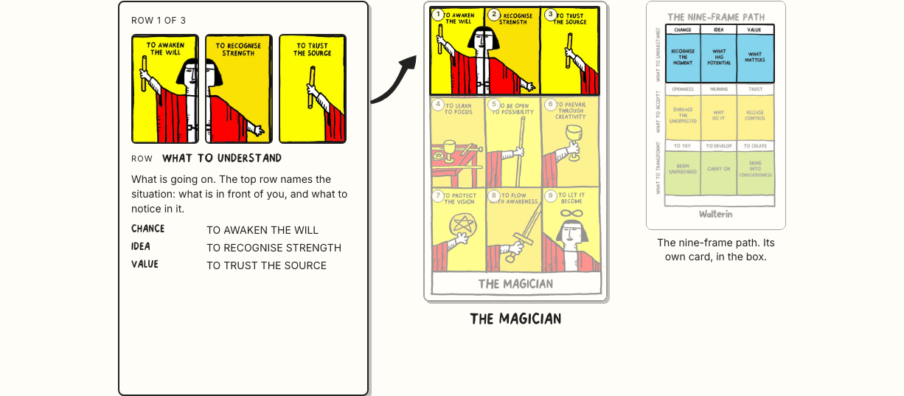

S2 · The reworked layout, and the walk
Ink, paper, yellow; the drawn arrow unchanged; the dimming unchanged. Four things are new: the card's name now sits under the card, the three objects have a clear order of importance, the note spells out both coordinates of the frame, and the walk is built — one button, three stops, one per row.
1 · The order of importance
Nothing competes any more. The explanation is the biggest object on the line, the card is second and carries its own name, the path card is reference and sits back.
| before | now | why | |
|---|---|---|---|
| the explanation | 300px, frame at 146, caption 21px | 340px, frame at 184, caption 24px, deeper shadow | it is what the section is for |
| the card | 250px, name in the picker row | 250px, name directly under it | you read the card and its name in one glance |
| the path card | 250px, same frame and shadow | 190px — 76%, thin border, no shadow | reference: present, quieter, never equal to the card |
| the gaps | 74 / 30 | 74 (the arrow) / 52 | the wider second gap separates the explanation from the reference |
2 · The note says where the frame sits
Above the caption, both coordinates, each labelled so neither can be read as the other. The path card still highlights the cell — now the words are written down too.
| Slot | Slovensky | English |
|---|---|---|
| labels | Riadok · Stĺpec | Row · Column |
| rows | Čo pochopiť · Čo prijať · Čo premeniť | What to understand · What to accept · What to transform |
| columns, row 1 | Náhoda · Nápad · Hodnota (pending Walter) | Chance · Idea · Value (as printed) |
| columns, row 2 | Otvorenosť · Zmysel · Dôvera (pending Walter) | Openness · Meaning · Trust (as printed) |
| columns, row 3 | Skúsiť · Rozvíjať · Tvoriť (pending Walter) | To try · To develop · To create (as printed) |
| the walk | Prevedie ma tým · Zastaviť · Riadok 1 z 3 | Walk me through it · Stop · Row 1 of 3 |
The Slovak column words are mine, not Walter's. His are printed on the card in English and the card stays English. In use until he signs them off.
3 · The walk — one button, three stops, 47 seconds
Built as the three-row walk only. The nine-frame version was costed at 65s in English and 72s in Slovak and
dropped: a minute is too long to ask for on a product page, and two walk buttons on a bar that already holds Back, nine dots,
Next and the deck is one control too many — the nine frames are already there, at your own pace, on Back and Next.
Every number and every rule is in docs/design/AUTOPLAY-WALK.md.
| Per stop | |
|---|---|
| words on a stop | row name 3 + explanation 16–21 + three column words 4 + three captions 13 ≈ 41 |
| reading rate used | 1 second per 3 words — NN/g's rate for content the reader cannot pace. (Silent reading is 238 wpm, Brysbaert 2019, but that assumes you set the speed.) |
| reading | 13.7s |
| taking in the three frames | 1.5s — an estimate, not a citation |
| per row | 15s English · 17s Slovak (+15%: Slovak runs longer per word, no published rate exists) |
| beat at each row change | 0.8s |
| whole run | 46.6s English · about 52s Slovak |
| Behaviour | |
|---|---|
| start · stop | one button, never starts on its own; Esc also stops |
| hover | nothing — hover-pausing is what stalled S3 |
| click | any click that moves you stops it and leaves you there |
| keyboard | focus entering the section stops it |
| scrolled away | holds under 50% visible, carries on from where it was |
| tab change | holds; resumes when the tab is back and the section is in view |
| at the end | stops on the last row and stays. No loop. |
| reduced motion | still offered; the highlight jumps instead of travelling |
| screen reader | three announcements, one per row; stepping by hand still announces every frame |

The section


The three arrows
Three drawings, not one shape turned three ways. Each is a filled marker stroke: the weight grows along the stroke, both edges tremble slightly and independently, and the head is solid and broad. The climb sags then swings up and thickens as it goes; the level one carries the double waver of a hand holding a line; the fall leaves the note flat with a pool of ink at the start, dips, and lands heavy. The point stops in the gutter — 12 to 29px clear of the card at 1440 and at 390 — and marks the row the active frame is in. Nothing ever touches the artwork.


The three arrows on their own, at 1440, at 390 and at 3×
The note stays on the left at every width, as agreed: an arrow pointing right reads as "goes to", the eye is travelling that way already, and a side that never changes means the layout never reshuffles as you step.
The path card
Rendered from the print PDF at the card's own proportions — the page is 238 × 391pt, which is 84 × 138mm, so it
already is a card. Same width, same height, same border, same corner, same shadow as the tarot card next to it. As you step,
its cell lights up under the same dimming the card uses; the cell positions are measured off the printed grid lines.
Files: nine-frame-path-card.png 82 KB and .webp 85 KB at 800 × 1314. One line underneath, and nothing else:
"The nine-frame path. Its own card, in the box." / "Cesta v deviatich krokoch. Vlastná karta, priamo v balíčku."
Still flagged, still untouched: the printed diagram's green against the cards' turquoise. You are raising it with Walter.
Measured
| 1440 × 900 | 390 × 844 | |
|---|---|---|
| Two readings start at | 899px — one screen | 1318px |
| The note ends at | 720px | 788px — above the fold |
| The cards | tarot 250 × 408, path card 190 (76%) · 140 and 110 on the phone | |
| Arrow clearance from the card | 18.5 – 28.7px | 12.4 – 18.5px |
| Path card cell follows all nine frames | pass | pass |
| Layout shift stepping by hand | 0.0000 | 0.0000 |
| Layout shift across a whole 47s walk | 0.0006 | 0.0000 |
| Palette — ink, paper, yellow only | pass | pass |
| Nothing past the content edge · no horizontal scroll | pass | pass |
| Keyboard, reduced motion, Chromium + WebKit, EN + SK | pass | pass |
On the phone the path card sits under the note and the card — three cards will not fit across 390px. It is always there, never toggled.